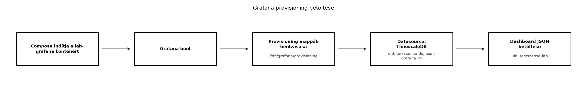

A TerraSense backend már fogadja a telemetriát, a TimescaleDB tárolja a nyers és aggregált adatokat. Az üzemeltető azonban nem fog minden kérdésre SQL-lel válaszolni: gyorsan látni akarja, hogy az üvegházban csökkent-e a hőmérséklet, mikor volt adathiány, és hogy az öntözőszelep állapota követi-e a talajnedvességet. A Grafana erre a megjelenítési rétegre épül rá: nem tárol, és nem módosítja az adatokat, hanem a meglévő forrásokra csatlakozik, és dashboardokat kínál. A dashboard ráadásul nemcsak vizualizáció: az Riasztás: szabályok, értesítés, riasztási fáradtság alfejezetben ugyanazokat a panel-lekérdezéseket használjuk majd riasztási szabályként, ezért érdemes a lekérdezéseket itt is gondosan kialakítani.
Definíció. (Provisioning.) A Grafana azon mechanizmusa, amely a konfigurációs állományokat (YAML/JSON) beolvasva automatikusan létrehozza az adatforrásokat, dashboardokat és más erőforrásokat. Ezzel a néhány kattintással összeállított dashboard is reprodukálható, verziókövethető és konténer-újraindítás után is azonos lesz.
Definíció. (Panel.) A dashboard egy vizualizációs egysége, amely legalább egy adatforrás-lekérdezésből származó adatsort jelenít meg kiválasztott típusban: idősor (time series), állapot, hőtérkép, stat vagy műszer (gauge).
Definíció. (Változó.) A dashboard szintű paraméter,
amelyet a Grafana a lekérdezésekbe $változó formában
illeszt be. A felhasználó a dashboard tetején választhat értéket,
például konkrét node-ot vagy site-ot.
A TerraSense esetében a Grafana a TimescaleDB adatforráson keresztül
éri el a telemetry, telemetry_hourly és
telemetry_daily táblákat/nézeteket. A Grafana SQL-makrói
közül kettőt használunk folyamatosan:
$__timeFilter(ts) a dashboard időtartományát adja át
WHERE feltételként;$__timeGroup(ts,'5m') időbeli bucketet (például 5
perces) hoz létre.A Grafana nem az adminisztrátori terra felhasználóval
csatlakozik, hanem egy külön, csak olvasási jogú grafana_ro
szerepkörrel. Ez a legkisebb jogosultság elve: a dashboard nem tud
véletlenül írni a telemetriába, és egy elrontott panel nem módosíthatja
a táblákat. A szerepkört a labor SQL-szkriptje hozza létre; éles
rendszerben a jelszót titokkezelőből kell betölteni, nem a
compose-fájlból.
Az alábbi ábra a provisioning betöltési útvonalát mutatja.

A konténer a host ~/iot-labor/i051/grafana-provisioning
mappáját mountolja a konténer /etc/grafana/provisioning
pontjára. A Grafana a datasources és
dashboards alkönyvtárakat figyeli, így a dashboard és az
adatforrás a konténer indulásakor automatikusan létrejön.
A megfelelő vizualizáció kiválasztása az adat jellegétől és az üzemeltetői kérdéstől függ. A TerraSense-ben az alábbi tipikus döntéseket hozzuk meg:
| Vizualizáció | Adat jellege | TerraSense-példa |
|---|---|---|
| Idősor (time series) | Folyamatos mérés, trend | Hőmérséklet, páratartalom |
| Stat | Egyetlen aktuális vagy utolsó érték | Utolsó hőmérséklet node-onként |
| Állapotsor (state timeline) | Diszkrét állapotváltozás | Szelep nyitva/zárva |
| Műszer (gauge) | Érték tartománnyal, küszöbbel | Talajnedvesség a 30–70% tartományban |
| Hőtérkép (heatmap) | Eloszlás vagy hiányzó adat | Napi mintaszám, adathiány |
Az idősor a leggyakoribb; a stat panel akkor hasznos, ha az utolsó
érték gyorsan kiolvasható, például egy vezénylői nézetben. A hőtérképet
akkor érdemes bevetni, amikor nem egyetlen érték, hanem a sűrűség vagy a
hiányzó adat a kérdés. A Megőrzés, ritkítás és
tárolási költség alfejezetben bevezetett
telemetry_hourly és telemetry_daily nézetek a
hosszú távú trendekhez és adathiány-észleléshez használandók, a nyers
telemetry tábla pedig a rövid távú, finom felbontású
panelekhez.
A labor előfeltétele az Idősoros adatbázisok és
adatmodellezés és a Megőrzés, ritkítás és
tárolási költség alfejezet elvégzése. A telemetry
hypertable, valamint a telemetry_hourly és
telemetry_daily nézetek meglévő, seedelt adatokkal
rendelkeznek. A nézetek oszlopai a TerraSense hosszú táblamodellje
szerint: bucket, site, node_id,
measurement_type, avg_value,
min_value, max_value,
sample_count. A bucket mindkét nézetben a
TimescaleDB time_bucket kimenete; a napi nézet is ezt a
nevet használja, nem külön day oszlopot.
Munkakönyvtár:
mkdir -p ~/iot-labor/i051/grafana-provisioning/datasources
mkdir -p ~/iot-labor/i051/grafana-provisioning/dashboards
cd ~/iot-labor/i051Először az adathiány-észleléshez szükséges két segédtáblát hozzuk
létre a ~/iot-labor/i051/01_dashboard_inventory.sql
fájlban. A sensor_nodes az üzemeltetési nyilvántartás:
akkor is tartalmazza a node-ot, ha az éppen néma, mert a
telemetry táblából a teljesen hiányzó napok nem derülnek
ki. A sensor_expected_samples méréstípusonként adja meg az
elvárt napi mintaszámot és a megengedett eltérést; a 10 perces
alapciklus napi 144 mintát jelent. A gh1/n002 szándékosan
szerepel a nyilvántartásban, de nincs telemetriája: ezzel a teljesen
néma eszköz viselkedését tudjuk ellenőrizni.
-- ~/iot-labor/i051/01_dashboard_inventory.sql
CREATE TABLE IF NOT EXISTS sensor_nodes (
site text NOT NULL,
node_id text NOT NULL,
PRIMARY KEY (site, node_id)
);
CREATE TABLE IF NOT EXISTS sensor_expected_samples (
measurement_type text PRIMARY KEY,
samples_per_day integer NOT NULL CHECK (samples_per_day > 0),
tolerance_ratio numeric(3,2) NOT NULL DEFAULT 0.10
CHECK (tolerance_ratio >= 0 AND tolerance_ratio < 1)
);
INSERT INTO sensor_nodes (site, node_id)
VALUES ('gh1', 'n001'), ('gh1', 'n002')
ON CONFLICT (site, node_id) DO NOTHING;
INSERT INTO sensor_expected_samples (measurement_type, samples_per_day, tolerance_ratio)
VALUES ('temperature', 144, 0.10),
('humidity', 144, 0.10),
('soil_moisture', 144, 0.10)
ON CONFLICT (measurement_type) DO UPDATE
SET samples_per_day = EXCLUDED.samples_per_day,
tolerance_ratio = EXCLUDED.tolerance_ratio;Ezután a ~/iot-labor/i051/02_grafana_ro.sql fájl
létrehozza a csak olvasási jogú szerepkört. A jelszó kizárólag a helyi
laborhoz tartozik. A GRANT SELECT kizárólag a dashboardhoz
szükséges öt objektumra vonatkozik; a szerepkör nem kap írási jogot, és
nem láthatja a többi táblát.
-- ~/iot-labor/i051/02_grafana_ro.sql
DO $$
BEGIN
IF NOT EXISTS (SELECT 1 FROM pg_roles WHERE rolname = 'grafana_ro') THEN
CREATE ROLE grafana_ro LOGIN PASSWORD 'grafana-lab-only';
ELSE
ALTER ROLE grafana_ro WITH LOGIN PASSWORD 'grafana-lab-only';
END IF;
END
$$;
GRANT CONNECT ON DATABASE terrasense TO grafana_ro;
GRANT USAGE ON SCHEMA public TO grafana_ro;
GRANT SELECT ON TABLE telemetry,
telemetry_hourly,
telemetry_daily,
sensor_nodes,
sensor_expected_samples
TO grafana_ro;A két szkriptet a közös stack adatbázisán futtatjuk. A
-v ON_ERROR_STOP=1 biztosítja, hogy egy hibás lépés után a
szkript ne folytatódjon csendben. A második parancs után ellenőrizzük a
jogosultságokat, majd egy pozitív és egy negatív olvasási/írási próbát
is végzünk.
docker compose -f ~/iot-labor/stack/compose.yaml exec -T lab-timescaledb \
psql -U terra -d terrasense -v ON_ERROR_STOP=1 < 01_dashboard_inventory.sql
docker compose -f ~/iot-labor/stack/compose.yaml exec -T lab-timescaledb \
psql -U terra -d terrasense -v ON_ERROR_STOP=1 < 02_grafana_ro.sql
docker compose -f ~/iot-labor/stack/compose.yaml exec -T lab-timescaledb \
psql -U terra -d terrasense -c '\dp telemetry*'
docker compose -f ~/iot-labor/stack/compose.yaml exec -T \
-e PGPASSWORD=grafana-lab-only lab-timescaledb \
psql -h 127.0.0.1 -U grafana_ro -d terrasense -c 'SELECT count(*) FROM telemetry;'
docker compose -f ~/iot-labor/stack/compose.yaml exec -T \
-e PGPASSWORD=grafana-lab-only lab-timescaledb \
psql -h 127.0.0.1 -U grafana_ro -d terrasense \
-c "INSERT INTO sensor_nodes (site, node_id) VALUES ('gh1', 'n999');"Az utolsó parancsnak
permission denied for table sensor_nodes hibával kell
megszakadnia; ez igazolja, hogy a dashboard felhasználója valóban csak
olvashat. A \dp telemetry* kimenetében a
grafana_ro számára csak az r (SELECT) jog
látszik.
Ezután hozzuk létre a három provisioning fájlt. Az adatforrás
definíciója a
grafana-provisioning/datasources/datasources.yml fájlba
kerül. Az url a közös compose-hálózat
lab-timescaledb hostnevét használja; a stack szolgáltatásai
ugyanazon az alapértelmezett compose-hálózaton vannak, ezért nincs
szükség külön lab hálózat definiálására. A
grafana_ro felhasználó és a laborjelszó a fenti
SQL-szkripttel egyezik.
apiVersion: 1
datasources:
- name: TimescaleDB
type: postgres
access: proxy
uid: terrasense-ds
url: lab-timescaledb:5432
database: terrasense
user: grafana_ro
secureJsonData:
password: grafana-lab-only
jsonData:
sslmode: disable
postgresVersion: 1600
timescaledb: trueA dashboard-provider a
grafana-provisioning/dashboards/dashboards.yml fájlba
kerül:
apiVersion: 1
providers:
- name: TerraSense
orgId: 1
folder: ""
type: file
disableDeletion: false
updateIntervalSeconds: 30
options:
path: /etc/grafana/provisioning/dashboardsA dashboard JSON-t a
grafana-provisioning/dashboards/dashboard.json fájlba
mentsd. A $site és $node változó a
sensor_nodes nyilvántartásból kérdez, így a néma node is
kiválasztható. A nyers telemetriát használó panelek
valid = true feltétellel szűrnek, és
node_id AS metric oszlopnévvel node-onként külön sorozatot
rajzolnak, nem egyetlen átlaggörbét. Az utolsó hőmérséklet stat panel a
$node szerint ismétlődik, ezért minden kiválasztott node
saját aktuális értéket kap. A hosszú távú panelek a Megőrzés, ritkítás és tárolási költség nézeteit
használják; a napi nézet oszlopa bucket, az átlag pedig
avg_value.
{
"title": "TerraSense – Üvegház monitor",
"uid": "terrasense-lab",
"refresh": "30s",
"time": {"from": "now-7d", "to": "now"},
"timezone": "utc",
"schemaVersion": 39,
"version": 1,
"templating": {
"list": [
{
"name": "site",
"label": "Site",
"type": "query",
"datasource": {"type": "postgres", "uid": "terrasense-ds"},
"definition": "SELECT DISTINCT site FROM sensor_nodes ORDER BY 1",
"query": "SELECT DISTINCT site FROM sensor_nodes ORDER BY 1",
"refresh": 1,
"multi": true,
"includeAll": true,
"sort": 1
},
{
"name": "node",
"label": "Node",
"type": "query",
"datasource": {"type": "postgres", "uid": "terrasense-ds"},
"definition": "SELECT DISTINCT node_id FROM sensor_nodes WHERE site IN ($site) ORDER BY 1",
"query": "SELECT DISTINCT node_id FROM sensor_nodes WHERE site IN ($site) ORDER BY 1",
"refresh": 1,
"multi": true,
"includeAll": true,
"sort": 1
}
]
},
"panels": [
{
"id": 1,
"type": "timeseries",
"title": "Hőmérséklet node-onként",
"gridPos": {"h": 8, "w": 12, "x": 0, "y": 0},
"fieldConfig": {
"defaults": {"unit": "celsius", "custom": {}},
"overrides": []
},
"targets": [
{
"refId": "A",
"datasource": {"type": "postgres", "uid": "terrasense-ds"},
"format": "time_series",
"rawQuery": true,
"editorMode": "code",
"rawSql": "SELECT $__timeGroup(ts,'5m') AS time, node_id AS metric, avg(value) AS \"avg_temp\" FROM telemetry WHERE $__timeFilter(ts) AND site IN ($site) AND node_id IN ($node) AND measurement_type = 'temperature' AND valid = true GROUP BY 1, 2 ORDER BY 1"
}
]
},
{
"id": 2,
"type": "timeseries",
"title": "Páratartalom node-onként",
"gridPos": {"h": 8, "w": 12, "x": 12, "y": 0},
"fieldConfig": {
"defaults": {"unit": "percent", "custom": {}},
"overrides": []
},
"targets": [
{
"refId": "A",
"datasource": {"type": "postgres", "uid": "terrasense-ds"},
"format": "time_series",
"rawQuery": true,
"editorMode": "code",
"rawSql": "SELECT $__timeGroup(ts,'5m') AS time, node_id AS metric, avg(value) AS \"avg_humi\" FROM telemetry WHERE $__timeFilter(ts) AND site IN ($site) AND node_id IN ($node) AND measurement_type = 'humidity' AND valid = true GROUP BY 1, 2 ORDER BY 1"
}
]
},
{
"id": 3,
"type": "timeseries",
"title": "Talajnedvesség node-onként",
"gridPos": {"h": 8, "w": 12, "x": 0, "y": 8},
"fieldConfig": {
"defaults": {"unit": "percent", "custom": {}},
"overrides": []
},
"targets": [
{
"refId": "A",
"datasource": {"type": "postgres", "uid": "terrasense-ds"},
"format": "time_series",
"rawQuery": true,
"editorMode": "code",
"rawSql": "SELECT $__timeGroup(ts,'5m') AS time, node_id AS metric, avg(value) AS \"avg_soil\" FROM telemetry WHERE $__timeFilter(ts) AND site IN ($site) AND node_id IN ($node) AND measurement_type = 'soil_moisture' AND valid = true GROUP BY 1, 2 ORDER BY 1"
}
]
},
{
"id": 4,
"type": "stat",
"title": "Utolsó hőmérséklet – $node",
"repeat": "node",
"repeatDirection": "h",
"maxPerRow": 4,
"gridPos": {"h": 8, "w": 12, "x": 12, "y": 8},
"fieldConfig": {"defaults": {"unit": "celsius"}},
"options": {
"reduceOptions": {"calcs": ["lastNotNull"], "fields": "", "values": false}
},
"targets": [
{
"refId": "A",
"datasource": {"type": "postgres", "uid": "terrasense-ds"},
"format": "table",
"rawQuery": true,
"editorMode": "code",
"rawSql": "SELECT value AS \"last_temp\" FROM telemetry WHERE $__timeFilter(ts) AND site IN ($site) AND node_id = '$node' AND measurement_type = 'temperature' AND valid = true ORDER BY ts DESC LIMIT 1"
}
]
},
{
"id": 5,
"type": "timeseries",
"title": "Napi átlaghőmérséklet (telemetry_daily)",
"gridPos": {"h": 8, "w": 24, "x": 0, "y": 16},
"fieldConfig": {
"defaults": {"unit": "celsius", "custom": {}},
"overrides": []
},
"targets": [
{
"refId": "A",
"datasource": {"type": "postgres", "uid": "terrasense-ds"},
"format": "time_series",
"rawQuery": true,
"editorMode": "code",
"rawSql": "SELECT bucket AS time, node_id AS metric, avg_value AS \"daily_avg_temp\" FROM telemetry_daily WHERE $__timeFilter(bucket) AND site IN ($site) AND node_id IN ($node) AND measurement_type = 'temperature' ORDER BY 1"
}
]
},
{
"id": 6,
"type": "heatmap",
"title": "Napi adathiány (elvárt minta 90%-a alatt)",
"timeFrom": "7d",
"gridPos": {"h": 8, "w": 24, "x": 0, "y": 24},
"fieldConfig": {"defaults": {"unit": "short", "min": 0, "max": 1}},
"targets": [
{
"refId": "A",
"datasource": {"type": "postgres", "uid": "terrasense-ds"},
"format": "time_series",
"rawQuery": true,
"editorMode": "code",
"rawSql": "WITH days AS (SELECT generate_series(date_trunc('day', $__timeFrom()::timestamptz), date_trunc('day', $__timeTo()::timestamptz), interval '1 day') AS day), expected AS (SELECT n.site, n.node_id, e.measurement_type, e.samples_per_day, e.tolerance_ratio FROM sensor_nodes n CROSS JOIN sensor_expected_samples e WHERE n.site IN ($site) AND n.node_id IN ($node) AND e.measurement_type = 'temperature'), actual AS (SELECT bucket::date AS day, site, node_id, measurement_type, sum(sample_count)::bigint AS sample_count FROM telemetry_daily WHERE $__timeFilter(bucket) AND measurement_type = 'temperature' GROUP BY 1, 2, 3, 4) SELECT d.day AS time, x.node_id AS metric, CASE WHEN coalesce(a.sample_count, 0) < x.samples_per_day * (1 - x.tolerance_ratio) THEN 1 ELSE 0 END AS \"adathiany\" FROM days d CROSS JOIN expected x LEFT JOIN actual a ON a.day = d.day::date AND a.site = x.site AND a.node_id = x.node_id AND a.measurement_type = x.measurement_type WHERE d.day::date < current_date ORDER BY 1, 2"
}
]
}
]
}Egészítsd ki a közös ~/iot-labor/stack/compose.yaml
compose-fájlt a Grafana-szolgáltatással. A lab-grafana
konténer a ../i051/grafana-provisioning útvonalat
mountolja, mert a compose-fájl a stack mappában van, a
laborfájlok pedig az i051 mappában. A szolgáltatás nem kap
külön networks bejegyzést: a stack összes szolgáltatása az
alapértelmezett compose-hálózaton van, így a lab-grafana a
lab-timescaledb szolgáltatásnevet közvetlenül feloldja. A
GF_SECURITY_ADMIN_USER és
GF_SECURITY_ADMIN_PASSWORD kizárólag laborcélra szolgáló
érték.
lab-grafana:
image: grafana/grafana:11.2.0
container_name: lab-grafana
ports: ["3000:3000"]
environment:
GF_SECURITY_ADMIN_USER: lab-admin
GF_SECURITY_ADMIN_PASSWORD: lab-pass
volumes:
- ../i051/grafana-provisioning:/etc/grafana/provisioning
- lab-grafana-data:/var/lib/grafana
depends_on:
- lab-timescaledbA compose-fájl volumes szekciójához add hozzá a
lab-grafana-data névvel jelölt kötetet. Az explicit
name megadásával a kötet neve nem kap compose-projekt
előtagot, összhangban a lab-timescaledb-data kötet Idősoros adatbázisok és adatmodellezés
alfejezetbeli definíciójával.
volumes:
lab-grafana-data:
name: lab-grafana-dataIndítsd el a Grafanát, és ellenőrizd a konténer állapotát, majd a health endpointot:
cd ~/iot-labor/stack
docker compose up -d lab-grafana
sleep 5
docker compose ps lab-grafana
curl -s http://localhost:3000/api/healthVárt kimenet: a health-válasz JSON-objektum, amelyben a
database mező ok értékű. Ezután böngészőben
nyisd meg a http://localhost:3000 címet, jelentkezz be a
lab-admin / lab-pass hitelesítővel. A
Dashboards menüben válaszd a
TerraSense – Üvegház monitor dashboardot. A felső
Site és Node választóban például a
gh1 site és az n001 node választható; a
hőmérséklet-, páratartalom- és talajnedvesség-panel node-onként külön
sorozatot rajzol, az utolsó hőmérséklet panel pedig node-onként
ismétlődik.
A gh1/n002 node a nyilvántartásban szerepel, de nincs
telemetriája. Ha a dashboard időtartományát 7 napra állítod, a hőtérkép
minden lezárt napra 1 értéket mutat rá, míg az
n001 a normál 144 mintás napokon 0 marad. Ez a
teljesen néma eszköz és a teljesen hiányzó nap észlelésének ellenőrzése;
a telemetry_daily-ben ugyanis ezekre a napokra egyáltalán
nincs sor, ezért kell a sensor_nodes nyilvántartás és a
dátumrács.
A labor takarítása a saját, névvel jelölt objektumokra korlátozódik:
cd ~/iot-labor/stack
docker compose rm -f lab-grafana
docker volume rm lab-grafana-dataA provisioning hibáit a Grafana logjában érdemes keresni:
docker compose logs lab-grafana | grep -i provisioningA dashboard betöltését a böngészőn kívül hitelesítéssel is ellenőrizhetjük, de a laborban elegendő a health-check és a UI. Gyakori hibák és javításuk:
| Tünet | Ok | Javítás |
|---|---|---|
| A dashboard nem jelenik meg | A provisioning mappa mountolása rossz, vagy a dashboard JSON érvénytelen | Ellenőrizd a compose volumes-bejegyzést és a
JSON-érvényességet; docker compose logs lab-grafana |
| „permission denied for relation telemetry” | A grafana_ro nem kapott SELECT-et a
szükséges objektumokra |
Futtasd újra a 02_grafana_ro.sql szkriptet, és
ellenőrizd a \dp kimenetét |
| „PostgreSQL connection refused” | A Grafana nem éri el a lab-timescaledb konténert |
Ellenőrizd, hogy a két szolgáltatás ugyanazon az alapértelmezett
compose-hálózaton van, és a lab-timescaledb fut |
| „No data” az idősor panelen | A $__timeFilter makró hiányzik, a
valid = true szűrő kizárja az összes mintát, vagy az
időtartomány túl rövid |
Győződj meg arról, hogy a query-ben szerepel
$__timeFilter(ts), és bővítsd a dashboard time
tartományát |
A panel üres, a Query Inspectorban $__timeFilter
látszik |
A target rawSql helyett query mezőt
használ, vagy a rawQuery/editorMode
hiányzik |
Használd a rawSql mezőt rawQuery: true és
editorMode: "code" mellett; ellenőrizd a Query Inspectorban
a tényleges SQL-t |
| A hőtérkép minden napra piros | A mai, még nem lezárt napot is vizsgálja, vagy a
telemetry_daily még nem frissült |
A minta kizárja a current_date napját; frissítsd a
folyamatos aggregátumot, és várd meg a zárt napot |
| A hőmérséklet nyers számként jelenik meg | A unit hiányzik a panel fieldConfig
részéből |
Állítsd be a unit: "celsius" vagy
"percent" értéket |
$__timeFilter(ts) nem kerül be a dashboard JSON
rawSql mezőjébe, vagy a makró neve $timeFilter
(nem __) lesz. A Grafana így nyers $ jelet
küld a PostgreSQL-nek, amely szintaxishibát ad.$node esetén a lekérdezés
node_id = '$node' formát használ. Ahelyett, hogy a Grafana
automatikusan IN ('n001','n002')-vé bővítené, a string
interpoláció törése miatt hibás SQL jön létre. Helyesen:
node_id IN ($node) idézőjelek nélkül. Kivétel a
repeat-tel ismételt stat panel, ahol a $node
éppen az aktuális ismétlés egyetlen értéke, ezért ott szándékosan
node_id = '$node' szerepel.telemetry táblát
kérdezik, és nem a Megőrzés, ritkítás és tárolási
költség folyamatos aggregátumait. Ez lassú és feleslegesen sok
pontot rajzol ki. A napi panel ezért a telemetry_daily
bucket és avg_value oszlopát használja.ts mezőjének
UTC-jétől. A dashboard timezone beállítása ezért
utc; a böngésző időzónája csak a megjelenítést
befolyásolhatja, a tárolt adat továbbra is UTC.telemetry_daily soraiból
számolni hibás, mert a teljesen néma node/nap egyáltalán nem hoz létre
sort. A helyes minta a sensor_nodes nyilvántartás, a
sensor_expected_samples elvárt mintaszáma és egy dátumrács
összekapcsolása.telemetry_daily nézetet a nyers
telemetry tábla helyett? Milyen vizualizációt választanál a
napi adathiány megjelenítésére?time_series formátumához SQL-lekérdezést, amely a Megőrzés, ritkítás és tárolási költség
telemetry_hourly nézetéből 7 napos átlaghőmérsékletet ad
vissza a gh1/n001 node-ra, a Grafana dashboard
időtartományát alkalmazva. A nézet oszlopnevei bucket,
site, node_id, measurement_type
és avg_value.dashboard.json fájlt egy heatmap-panelnel, amely a
sensor_expected_samples méréstípusonkénti elvárt napi
mintaszáma (a 10 perces ciklus miatt 144) és a
telemetry_daily sample_count értéke alapján
jelzi a 90% alatti napokat. A teljesen néma node/nap is jelenjen meg;
használd a sensor_nodes nyilvántartást és dátumrácsot, és
zárd ki a még nem lezárt mai napot.syntax error at or near "$" hiba látható. Mi a hiba
valószínű oka, és hogyan javítanád?A telemetry_daily nézet már előre aggregálja az
átlagokat, így egy 1 éves trend sokkal kisebb adatmennyiségből
jeleníthető meg. A nyers tábla 30 napig őrzi csak meg a finom felbontású
adatokat. Az adathiányhoz heatmap-panel illik: az x tengely az idő, az y
tengely a node, a cella színe pedig az elvárt mintaszámtól való
elmaradás. A teljesen hiányzó napokat a sensor_nodes
nyilvántartásból és dátumrácsból kell előállítani, mert az aggregátumban
ezekre nincs sor.
A lekérdezés:
SELECT bucket AS time, avg_value AS "avg_temp"
FROM telemetry_hourly
WHERE $__timeFilter(bucket)
AND site = 'gh1'
AND node_id = 'n001'
AND measurement_type = 'temperature'
ORDER BY 1A panel format mezője time_series, a target
pedig rawSql mezőt, rawQuery: true és
editorMode: "code" beállítást használ. A hosszabb, 7 napos
időtartományt a dashboard time beállítása adja; a nézetből
így órás bontásban rajzolódik a trend.
A heatmap-panel mintája. A sensor_expected_samples
táblában a samples_per_day 144, a
tolerance_ratio 0.10; a query a sensor_nodes
nyilvántartásból és egy dátumrácsból indul, ezért a teljesen néma
node/nap is megjelenik. A current_date kizárja a még nem
lezárt mai napot.
{
"id": 6,
"type": "heatmap",
"title": "Napi adathiány (elvárt minta 90%-a alatt)",
"timeFrom": "7d",
"gridPos": {"h": 8, "w": 24, "x": 0, "y": 24},
"fieldConfig": {"defaults": {"unit": "short", "min": 0, "max": 1}},
"targets": [
{
"refId": "A",
"datasource": {"type": "postgres", "uid": "terrasense-ds"},
"format": "time_series",
"rawQuery": true,
"editorMode": "code",
"rawSql": "WITH days AS (SELECT generate_series(date_trunc('day', $__timeFrom()::timestamptz), date_trunc('day', $__timeTo()::timestamptz), interval '1 day') AS day), expected AS (SELECT n.site, n.node_id, e.measurement_type, e.samples_per_day, e.tolerance_ratio FROM sensor_nodes n CROSS JOIN sensor_expected_samples e WHERE n.site IN ($site) AND n.node_id IN ($node) AND e.measurement_type = 'temperature'), actual AS (SELECT bucket::date AS day, site, node_id, measurement_type, sum(sample_count)::bigint AS sample_count FROM telemetry_daily WHERE $__timeFilter(bucket) AND measurement_type = 'temperature' GROUP BY 1, 2, 3, 4) SELECT d.day AS time, x.node_id AS metric, CASE WHEN coalesce(a.sample_count, 0) < x.samples_per_day * (1 - x.tolerance_ratio) THEN 1 ELSE 0 END AS \"adathiany\" FROM days d CROSS JOIN expected x LEFT JOIN actual a ON a.day = d.day::date AND a.site = x.site AND a.node_id = x.node_id AND a.measurement_type = x.measurement_type WHERE d.day::date < current_date ORDER BY 1, 2"
}
]
}Az n001 normál 10 perces ciklusban napi 144 mintát küld,
ami nem kisebb a 144 × 0,9 = 129,6 határnál, ezért nem ad riasztást. A
nyilvántartott, de néma n002 minden lezárt napra 0 mintát
ad, ezért a hőtérkép 1-et mutat. A
sample_count a telemetry_daily
méréstípusonkénti darabszáma; a napi nézet a sample_count
értékeket összegzi.
A hiba oka általában az, hogy a Grafana nem helyettesíti a
$__timeFilter vagy $__timeGroup makrót, mert a
dashboard JSON targetjében query mező szerepel a helyes
rawSql helyett, hiányzik a rawQuery: true,
vagy a query nem a Postgres adatforrás uid-jét használja. A
PostgreSQL a nyers $ karaktert elutasítja. Javítás: a
target rawSql mezőt, rawQuery: true és
editorMode: "code" beállítást használjon, a
datasource.uid értéke terrasense-ds legyen, a
makró neve pedig pontosan $__timeFilter(ts) vagy
$__timeGroup(ts,'5m'). A Query Inspectorban ellenőrizd,
hogy a Grafana a makrót már feloldott SQL-ként küldi a
PostgreSQL-nek.
Az alfejezetben a TerraSense adataira építettünk Grafana-dashboardot.
A provisioning fájlok a
~/iot-labor/i051/grafana-provisioning mappában találhatók:
datasources/datasources.yml definiálja a
TimescaleDB-adatforrást terrasense-ds UID-del és a csak
olvasási jogú grafana_ro felhasználóval,
dashboards/dashboards.yml a fájlalapú dashboard-betöltést,
dashboards/dashboard.json pedig a
TerraSense – Üvegház monitor dashboardot
(uid: terrasense-lab). A dashboard $site és
$node multiváltozót használ; a $node a
sensor_nodes nyilvántartásból táplálkozik, ezért a néma
node is kiválasztható. A nyers telemetriát használó panelek
valid = true szűréssel és node_id AS metric
csoportosítással node-onként külön sorozatot rajzolnak, az utolsó
hőmérséklet stat panel pedig node-onként ismétlődik. A hosszú távú panel
a telemetry_daily bucket,
avg_value és sample_count oszlopait használja;
a hőtérkép a sensor_expected_samples elvárt mintaszáma, a
sensor_nodes nyilvántartás és egy dátumrács alapján a
teljesen néma node/napot is jelzi. A labor SQL-szkriptjei létrehozzák a
csak olvasási jogú szerepkört és a segédtáblákat. Továbbvitt
eredmény. A dashboard.json panel-lekérdezéseit
használja az Riasztás: szabályok, értesítés,
riasztási fáradtság alfejezet, a teljes TerraSense stack pedig a Záróprojekt során ezzel a Grafana-szolgáltatással
áll össze.
schemaVersion és a panel JSON-mezők
pontos neve a használt Grafana-verziótól függ, ellenőrizendő.rawSql,
rawQuery és editorMode targetmezők, valamint a
$__timeFilter, $__timeGroup és multiváltozós
interpoláció pontos szintaxisa a használt Grafana 11.2.0 verzióban
ellenőrizendő; a fejezet kódját a szerző statikusan, JSON- és
SQL-szintaktikailag ellenőrizte, valódi Grafana-példányon nem
futtatta.11.2.0, a TimescaleDB 2.17.2 és
a PostgreSQL 16.4 rögzített laborverzió; a
grafana/grafana:11.2.0 konténerkép létezése és frissítési
állapota használat előtt ellenőrizendő.telemetry_hourly és
telemetry_daily nézetek oszlopnevei a Megőrzés, ritkítás és tárolási költség alfejezetben
létrehozott bucket, site,
node_id, measurement_type,
avg_value, min_value, max_value,
sample_count mezők. A folyamatos aggregátumok jelenleg nem
tartalmaznak valid oszlopot, ezért a hosszú távú panelek
minden ingestált mintát beszámítanak; éles rendszerben a nézetet a
valid = true feltétellel kell létrehozni, vagy a
dashboardnak a nyers táblát kell használnia.lab-admin / lab-pass Grafana-admin és a
grafana_ro / grafana-lab-only
adatbázis-hitelesítő kizárólag a helyi laborrendszerhez tartozik; éles
környezetben használni tilos.